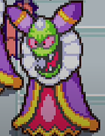
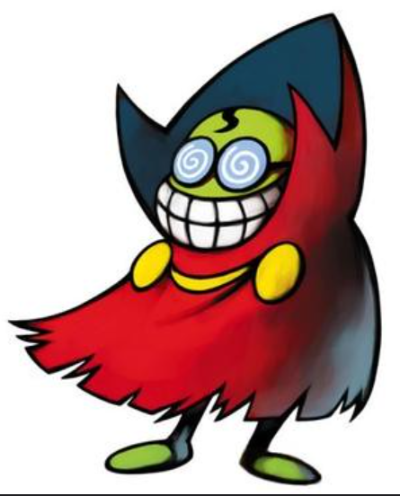
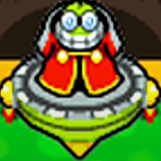

Background



Cackletta
Superstar Saga design
Partners in Time design
Inside story design
Fawful was originally introduced in the game Mario and Luigi Superstar Saga as a loyal minion of the villain Cackletta. He wished to help
her become the ruler of the bean kingdom and the mushroom kingdom. However they failed and were defeated by the Mario brothers.
Fawful does make a cameo in the sequal M&L Partners in Time however in order to show that he is still alive and plotting a revenge angest Mario and Luigi, even though
he runs a shop for other characters to shop in and get powerful items. Then in M&L Bowser's Inside Story Fawful puts his master plan into action.
More on this in the Goal&Motive tab.